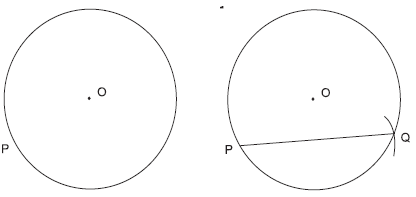
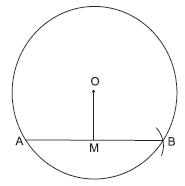

Practical Geometry
1. To draw a chord of given length in a circle.
Example : Draw a chord of length 5 cms in a circle of radius 3 cms. Steps
Steps
1) With ‘O’ as centre and 3 cms as radius, draw a circle.
2) Mark a point ‘P’ on the circle.
3) With ‘P’ as centre and 5 cms radius draw an arc to cut the circle at ‘Q’. Join PQ.
2. To find the distance between the centre and a chord of a circle.
Example : Draw a chord of length 6 cms in a circle of radius 3.5 cms. Find the distance between the centre and the chord.
Steps
1) With ‘O’ as centre and 3.5 cm as radius draw a circle.
2) Construct a chord AB = 6 cms. in it.
3) Mark the middle point of the chord AB say M
4) Join OM. Measure OM.
OM is the distance between the chord AB and the centre O Can you tell the measurement of OMB?
3)Draw direct common tangents to two circles of radii 2 cms, whose centres are 6 cms apart.
Steps : 1) Draw AB = 6 cms
2) Draw two circles of radii 2 cms with A and B as centres,as shown in the figure.
3) Draw perpendiculars to AB
4) Let the perpendicular drawn at ‘A’ intersect circle C1 at P and Q and the perpendicular at B intersect circle C2 at R and S.
5) Join PR and QS.